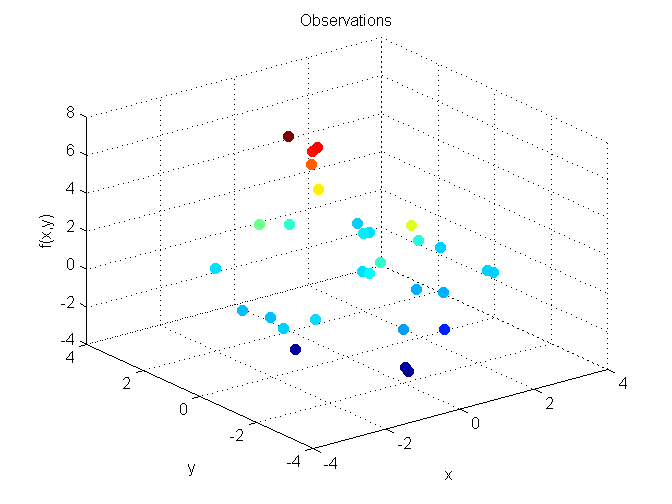
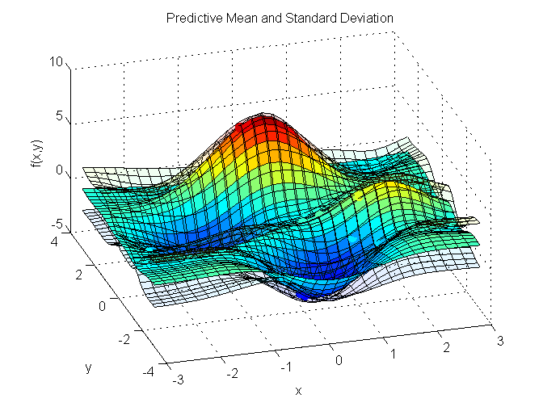
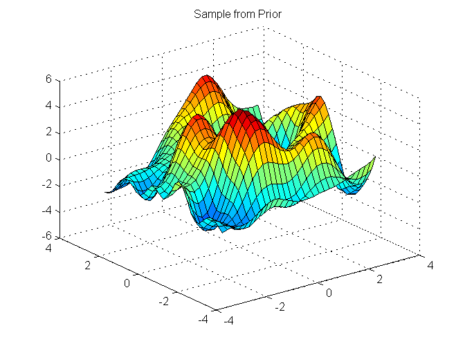
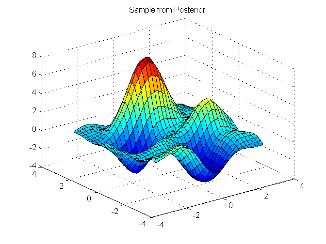

Contents
%%%%%%%%%%%%%%%%%%%%%%%%%%%%%%%%%%%%%%%%%%%%%%%%%%%%%%%%%%%%%%%%%%%%%%% % Gaussian Process Demo Script % Demonstrates GP regression using the taco-pig toolbox on 2-D Data. %%%%%%%%%%%%%%%%%%%%%%%%%%%%%%%%%%%%%%%%%%%%%%%%%%%%%%%%%%%%%%%%%%%%%%% %Add optimization folder % p = pwd(); slash = p(1); % addpath(genpath(['..',slash,'optimization'])) addpath(genpath(['optimization']))
%%%%%%%%%%%%%%%%%%%%%%%%%%%%% 2-D Example%%%%%%%%%%%%%%%%%%%%%%%%%%%%%
close all; clear all; clear functions; clc; % import tacopig.*;
Set up 2-D Data
Training Data
X = (rand(2,30)-0.5)*6; y = peaks(X(1,:),X(2,:))+1e-2*randn(1,size(X,2)); [xeva yeva] = meshgrid(-3:0.2:3,-3:0.2:3); xstar = [xeva(:)';yeva(:)']; figure; scatter3(X(1,:),X(2,:),y,40,y,'filled') xlabel('x');ylabel('y');zlabel('f(x,y)');title('Observations');
Set up Gaussian process
% Use a standard GP regression model: GP = tacopig.gp.Regressor; % Plug in the data GP.X = X; GP.y = y; % Plug in the components GP.MeanFn = tacopig.meanfn.ConstantMean(mean(y)); GP.CovFn = tacopig.covfn.SqExp();%SqExp(); GP.NoiseFn = tacopig.noisefn.Stationary(); GP.objective_function = @tacopig.objectivefn.NLML; GP.solver_function = @anneal; % Initialise the hyperparameters GP.covpar = 1*ones(1,GP.CovFn.npar(size(X,1))); GP.meanpar = zeros(1,GP.MeanFn.npar(size(X,1))); GP.noisepar = 1e-3*ones(1,GP.NoiseFn.npar);
Learn & Query
GP.learn(); GP.solve(); [mf, vf] = GP.query(xstar); sf = sqrt(vf); % Display learnt model figure scatter3(X(1,:),X(2,:),y,60,y,'filled') hold on surf(xeva,yeva,reshape(mf,size(xeva))) title('Predictive Mean Function and Standard Deviation Surfaces'); hold on surf(xeva,yeva,reshape(mf+sf,size(xeva)),'facealpha',0.1) surf(xeva,yeva,reshape(mf-sf,size(xeva)),'facealpha',0.1) xlabel('x');ylabel('y');zlabel('f(x,y)');title('Predictive Mean and Standard Deviation'); pause
Running simulated annealing. Does not use gradients. Initial temperature: 1 Final temperature: 2.5711e-07 Consecutive rejections: 1160 Number of function calls: 8989 Total final loss: 44.9485
Generate samples from prior and posterior
figure; hold on; for i = 1:5 clf fstar = GP.sampleprior(xstar); surf(xeva,yeva,reshape(fstar,size(xeva))); title('Sample from Prior') pause(2) end pause figure hold on; for i = 1:5 clf fstar = GP.sampleposterior(xstar); surf(xeva,yeva,reshape(fstar,size(xeva))); title('Sample from Posterior') pause(2) end 